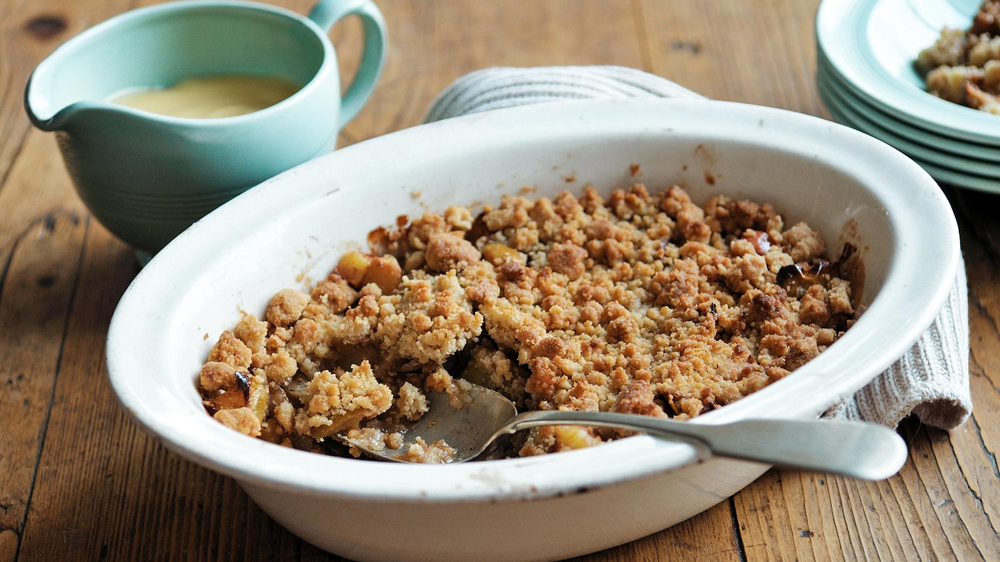

Apple Crumble Recipe

Description
An easy apple crumble recipe that'll leave you wanting more. A quick desert for all to enjoy.
Each serving provides 618 kcal, 6g protein, 83g carbohydrates (of which 43g sugars), 28.5g fat (of which 18g saturates), 3.5g fibre and 0.21g salt.
Ingredients
For the crumble
- 300g/10.5 oz plain flour, sieved
- pinch of salt
- 175g/6oz brown sugar
- 200g/7oz unsalted butter at room temperature, cubed, plus a little for greasing
For the filling
- 450g/1lb apples, peeled, cored and cut into 1cm/0.5in pieces
- 50g/2oz brown sugar
- 1 tbsp plain flour
- 1 pinch ground cinnamon
Method
- Preheat the oven to 180C/160C Fan/Gas 4.
- Place the flour, salt and sugar in a large bowl and mix well. Taking a few cubes of butter at a time rub into the flour mixture. Keep rubbing until the mixture resembles breadcrumbs and all the butter is incorporated.
- Place the fruit in a large bowl and sprinkle over the sugar, flour and cinnamon. Stir well, being careful not to break up the fruit.
- Butter a 24cm/9in ovenproof dish. Spoon the fruit mixture into the bottom, then sprinkle the crumble mixture on top.
- Bake for 40–45 minutes until the crumble is browned and the fruit mixture bubbling.
- Serve with thick cream or custard.